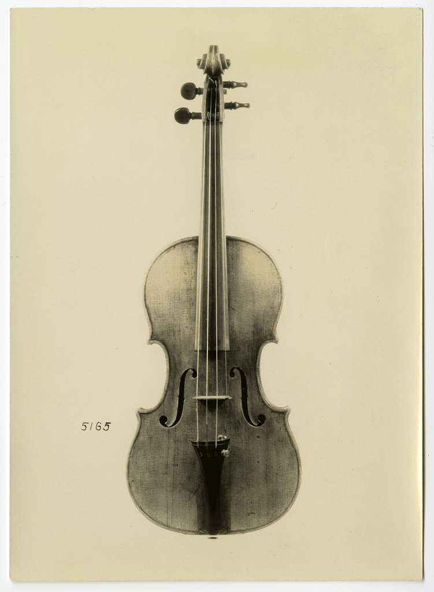
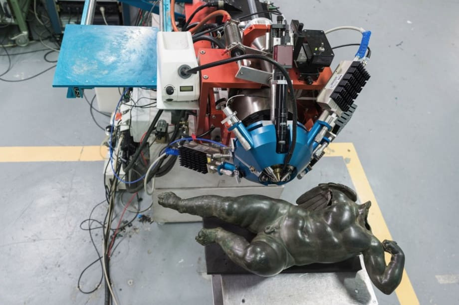
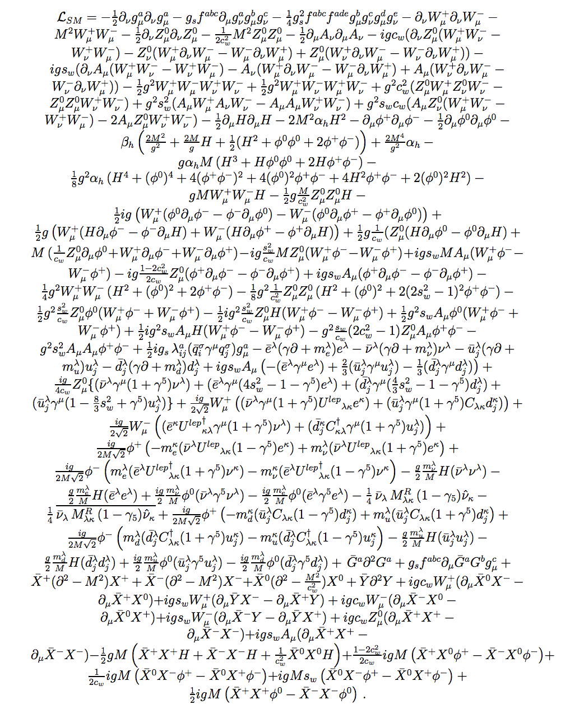
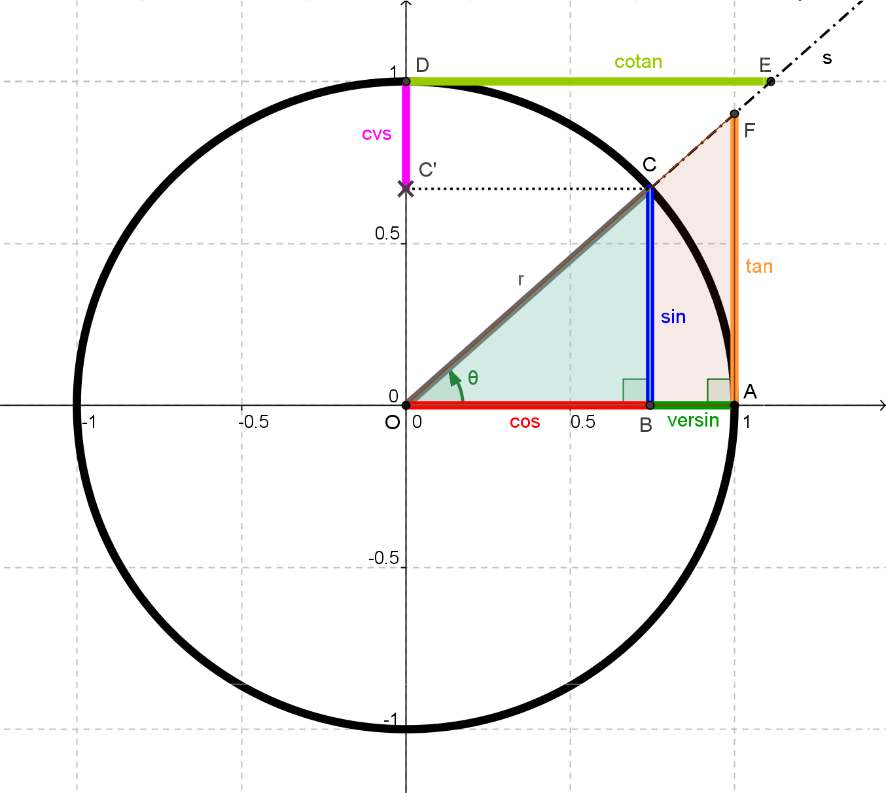
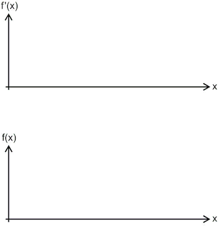
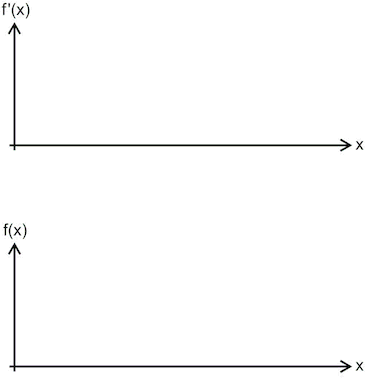

Fisica per Musicologia e la conservazione dei beni culturali
Corso di Fisica (6 CFU - 36 ore)
Dott. Giovanni Pellegrini - giovanni.pellegrini@unipv.it
Walker
Halliday, Resnik and Walker
Tipler
Programma
Esame orale: tema da approfondire legato a problemi inerenti il corso in Restauro
- Elementi di matematica - grandezze fisiche
- Cinematica e dinamica
- Proprietà dei materiali
- Fluidi
- Elettromagnetismo
- Onde, suono e ottica
- Interazione radiazione materia
Fisica, musica e arte
La fisica del suono e delle vibrazioni: 1
La fisica del suono e delle vibrazioni: 2
La fisica del suono e delle vibrazioni: 3
La fisica del suono e delle vibrazioni: 4
Conservazione dei beni culturali
Acceleratore di particelle AGLAE
“Analisi non distruttiva dei rubini incastronati nella statuetta persiana rappresentante la dea Ishtar.”
Conservazione dei beni culturali
elementi di matematica
un piccolo aiuto

Simboli matematici: 1
| + | - | x * \( \cdot \) | : / |
| Modulo: \( \vert a \vert \) | Valor Medio: \( \bar{a} \) | Vettore: \( \vec{a} \) | Infinito: \( \infty \) |
| Circa Uguale: \( \approx \) | Identità: \( \equiv \) | Diverso: \( \neq \) | Proporzionale: \( \propto \) |
| Maggiore: \( > \) | Minore: \( < \) | ||
| Maggiore Uguale: \( \geq \) | Minore Uguale: \( \leq \) | ||
| Molto Maggiore: \( \gg \) | Molto Minore: \( \ll \) |
Simboli matematici: 2
- \( \sqrt{x} \), \( \sqrt[n]{x} \)
- \( ! \)
- \( \Delta \), \( \delta \)
- \( \Sigma \), \( \int \)
- \( \prod \)
- \( \pi=3.1415 \), \( e=2.718 \)
Proporzionalità
\( F=G \frac{m_{1}m_{2}}{r^{2}} \)
Proporzioni
\( a:b = c:d \Rightarrow \frac{a}{b} = \frac{c}{d} \)
Potenze
\( a^{n} \)
- \( a^{n} \cdot a^{m} = a^{n + m}\)
- \( \frac{a^{n}}{a^{m}} = a^{n - m} \)
- \( (a^{n})^{m} = a^{n \cdot m}\)
- \( a^{\frac{n}{m}} = \sqrt[m]{a^{n}} \)
Potenze di 10 e ordini di grandezza
\( c = 3 \cdot 10^{8} (m/s) \)
- \( 0.01 = 10^{-2} \)
- \( 0.1 = 10^{1} \)
- \( 1 = 10^{0} \)
- \( 10 = 10^{1} \)
- \( 100 = 10^{2} \)
Logaritmi
\( log_{a}(b) = n \Rightarrow {a}^{n} = b \)
- \( log_{a}(a) = 1 \)
- \( log_{a}(1) = 0 \)
- \( log_{a}(n/m) = log_{a}(n) - log_{a}(m) \)
- \( log_{a}(n \cdot m) = log_{a}(n) + log_{a}(m) \)
- \( log_{a}(n^{m}) = m \cdot log_{a}(n)\)
- \( log_{\alpha}(n) = log_{a}(\alpha) \cdot log_{a}(n) \)
Ancora Logaritmi
\( log_{10}(b) = log(b) \)
\( log_{e}(b) = ln(e) \)
Logaritmi: i decibel
\( dB = 10 \cdot log(\frac{I}{I_{0}}) \)
\( I =\) Intensità sonora in \( (W/m^{2}) \)
\( I_{0} = 10^{-12} (W/m^{2}) \Rightarrow \) Soglia di udibilità
Equazioni
1\(^{\circ}\) grado: \( a x + b = 0 \Rightarrow x = - \frac{b}{a} \)
2\(^{\circ}\) grado: \( a x^{2} + bx + c = 0 \)
\(\Downarrow\)
\( x_{1,2} = \frac{-b \pm \sqrt{b^{2}-4 a c}}{2 a} \)
Sistemi di equazioni
Lineare \( \begin{cases} a x + b y = s\\ c x + d y = t\\ \end{cases}\)
Non lineare \( \begin{cases} f(x,y) = 0\\ g(x,y) = 0\\ \end{cases}\)
funzioni
\( y = f(x) \)
\( f(x) = 2 x \)
\( f(x) = e^{x} \)
\( f(x) = 3x^{3} - 2x^{2} + \frac{2}{3}x \)
\( f(x) = sin(x) \)
\( f(x) = cos(x) \)
\( f(x) = ln(x) \)
funzioni in più variabili
\( z = f(x,y) \)
\( f(x) = cos(\sqrt{x^{2} + y^{2}}) \)

angoli
funzioni trigonometriche: sin, cos
funzioni trigonometriche: tan, cot
funzioni trigonometriche: proprietà
funzioni trigonometriche: suono
\( f(t) = sin(2 \pi \cdot f \cdot t) \)
\( t \) = tempo in secondi
\( f \) = frequenza in Hertz (La=440Hz)
Definizione di derivata
 

\( f'(x) = \frac{\mathrm{d}f}{\mathrm{d}x} = \lim_{\Delta x \to 0} \frac{f(x+\Delta x) - f(x)}{\Delta x} \)
Derivate fondamentali: 1
| \( f(x) \) | \( f'(x) \) | \( a \) | \( 0 \) | \( a \cdot x \) | \( a \) | \( x^{n} \) | \( n x^{n-1} \) | \( e^{x} \) | \( e^{x} \) | \( ln(x) \) | \( \frac{1}{x} \) |
Derivate fondamentali: 2
| \( f(x) \) | \( f'(x) \) | \( sin(x) \) | \( cos(x) \) | \( cos(x) \) | \( -sin(x) \) | \( tan(x) \) | \( \frac{1}{cos^{2}(x)} \) |
Derivate: funzione di funzione
| \( f(x) \) | \( f'(x) \) | \( f(g(x)) \) | \( f'(g(x)) \cdot g'(x) \) | \( f(x)^{n} \) | \( n \cdot f(x)^{n-1} \cdot f'(x) \) | \( ln(f(x)) \) | \( \frac{f'(x)}{f(x)} \) | \( e^{f(x)} \) | \( f'(x) \cdot e^{f(x)} \) |
Derivate: somma, prodotto e divisione
| \( f(x) \) | \( f'(x) \) | \( a \cdot f(x) + b \cdot g(x) \) | \( a \cdot f'(x) + b \cdot g'(x) \) | \( f(x) \cdot g(x) \) | \( f'(x) \cdot g(x) + f(x) \cdot g'(x) \) | \( \frac{f(x)}{g(x)} \) | \( \frac{f'(x) \cdot g(x) - f(x) \cdot g'(x)}{g(x)^{2}} \) |
Definizione di integrale definito

\[ S \approx \sum _{n}f(x_{n})\Delta x \, \, \, \Rightarrow \, \, \, S = \int_{a}^{b} f(x) \,dx \]
Integrali indefiniti fondamentali
| \( \int f(x) \, dx \) | \( F(x) \) | \( \int a \, dx \) | \( ax + c \) | \( \int x^{n} dx \) | \( \frac{x^{n+1}}{n+1} + c\) | \( \int \frac{1}{x} \, dx \) | \( ln(|x|) + c \) | \( \int e^{x} \, dx \) | \( e^{x} + c \) | \( \int a^{x} \, dx \) | \( \frac{a^{x}}{ln(a)} + c \) | \( \int sin(x) \, dx \) | \( -cos(x) + c \) | \( \int cos(x) \, dx \) | \( sin(x) + c \) |
Integrali: proprietà
| \( \int f(x) \, dx \) | \( F(x) \) | \( \int a \cdot f(x) \, dx \) | \( a \cdot \int f(x) \, dx \) | \( \int [f(x) + g(x)] \, dx \) | \( \int f(x) \, dx + \int g(x) \, dx \) |